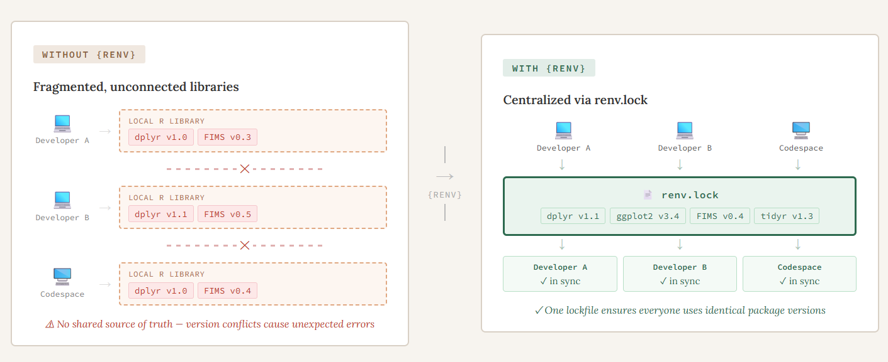
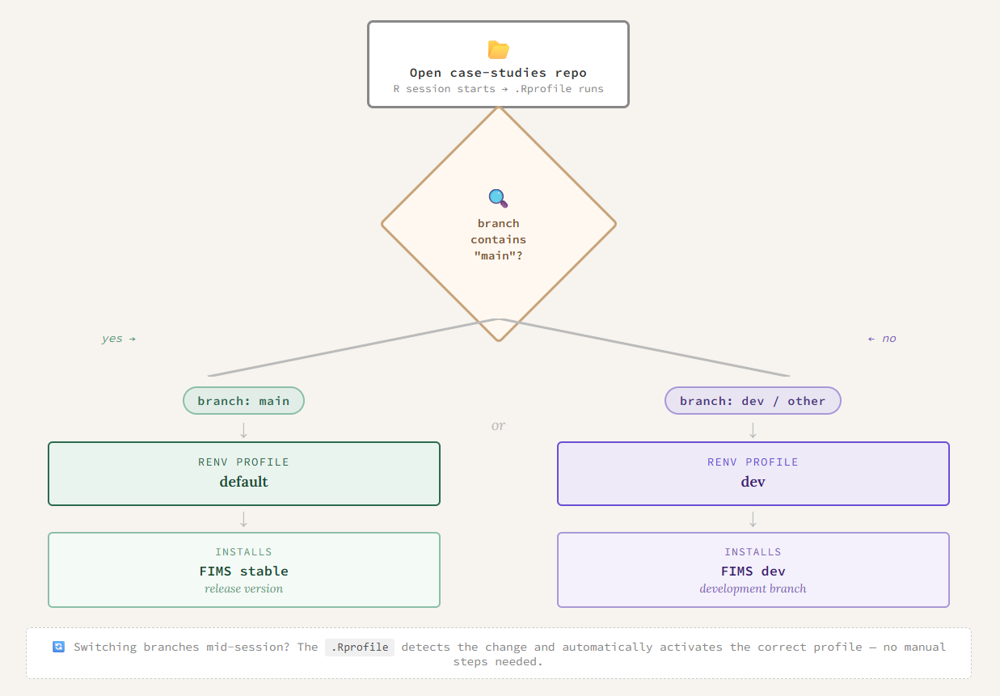

branch <- Sys.getenv("GITHUB_REF_NAME")
if (branch == "") {
branch <- system("git rev-parse --abbrev-ref HEAD", intern = TRUE)
}
profile <- if (grepl("main", branch)) "default" else "dev"
Sys.setenv(RENV_PROFILE = profile)
source("renv/activate.R")Why we use {renv}
Typically, when you install an R package, you are installing it into a central library that is accessible for all R sessions on that computer. This generally will work but what happens when you are working on a project with someone else and they write some code but when you try to run it on your computer it doesn’t work. You get a confusing error message and spend hours trying to debug it, only to realize you are using an older version of a package than they are and an argument has changed in a function. You update that package to the newest version and everything runs fine. But, the next time you work on a different project, you realize that you actually need the older version of that package. This leads to a lot of frustration and having to remember to install and uninstall different versions of r packages or having to change your code. As the {FIMS} ecosystem grows and we encounter or anticipate these and similar situations, we have begun incorporating {renv} into our workflows to address certain challenges. The {renv} R package is a package manager that tracks and records all R packages used within a project and creates a project-specific package library. It makes each of your projects their own isolated, portable, and reproducible environment that can be shared easily with others. In our experience, three challenges in particular pushed us toward using {renv} for {FIMSdiags} and the case studies. The three challenges we faced were:
- Collaborating across different machines and operating systems
- Managing multiple versions of {FIMS}
- Integrating {renv} into automated environments

Multi-developer and multi-platform collaboration
Because both projects are worked on by multiple developers on their local machines as well as in a codespace, we needed an easy way to make sure that each person is using the same version of all packages used when writing/running the code, without them having to change the version they have on their local machine. Before we started writing any code for {FIMSdiags}, we initialized an empty {renv} project (renv::init()). This created the key files needed to make everything work, namely the renv.lock file, activate.R, and the {renv} library. The renv.lock file contains all of the metadata for every package that is used in the project and is what is shared in the repository to make everything “work”. We decided later on to add {renv} to the case studies but the initial set up was generally the same. The only difference was that some packages used in the codebase were difficult to install automatically, so we installed those manually using renv::install().
Tip
A benefit of using the install function through {renv} is that you can install packages from a variety of sources, including CRAN or Github, with the a single function.
Once a {renv} project has been initialized in a project, at the start of each work session, the developer makes sure their package library is up-to-date by running renv::status(). If no changes have been made to any of the R packages used, they will get a message saying their project is up to date, otherwise, they will see a message about it being out of sync. To fix this, they have two options, 1) if it is out of sync because they are missing some packages that are in the lockfile or have a different version, then they can use renv::restore() to install those missing packages or 2) if they have packages in their environment that aren’t recorded in the lockfile, they can use renv::snapshot() to add them into the lockfile. Think of restore as pulling from the lockfile and snapshot as writing to it. At the end of each session, any changes to the lockfile are pushed to the repository so that the next time someone is working on the code, they are using the same environment.
Managing multiple versions of {FIMS}
{FIMS} is continuously in active development and since both projects rely heavily on {FIMS}, it’s really important that we are keeping track of what version of {FIMS} we are using. For example, when we are writing functions for {FIMSdiags} and find a bug in {FIMS}, we can switch to using the version with the fix until that fix is merged into the dev or main branch at a later time. Using the {renv} functions to install and update the lockfile with the specific version of {FIMS} makes this really easy to do. For the case studies, this challenge was more complex. We wanted to ensure there was always a version of the case studies that works with the stable version of {FIMS}, but we also want to be able to test them with features being added into the development branch of {FIMS}. To do this, we took advantage of its profiles feature to be able to seamlessly switch between multiple versions of {FIMS} for the case studies. We created two {renv} profiles, each with their own R libraries. The profiles are determined by which branch of the case studies repository you are working on. If your R session detects “main” in the branch name it will automatically use the default profile which uses the stable version of {FIMS}. Otherwise, it will activate the dev profile and therefore, the user will be using the development version of {FIMS}.

Integrating {renv} into automated environments
Reducing friction for both developers and users was a priority. Ideally, {renv} should just work in the background without requiring anyone to think about it. We achieved this in three ways: automating profile switching, setting up the codespace to install packages on startup, and keeping the {renv} files out of the package build.
Since the case studies are primarily for testing and educational purposes, we want the users to be able to focus on how to setup the {FIMS} model and the features they can use in them, not struggling with what version of {FIMS} (or other packages) they are using. The profile setting and switching happen automatically in the background, all done through the .Rprofile as shown below:
This also will recognize if the user has switched branches of the case studies and the {renv} profile will automatically change in their R session. Another example of reducing friction for developers is that when we are working on {FIMSdiags} in a codespace, we want the R packages to automatically be installed at the startup. To do this, in the devcontainer.json file we added
"postCreateCommand": "Rscript .devcontainer/setup.r"and then the setup.r script is just:
# Restore the renv packages on container build
renv::restore(prompt=FALSE)Lastly, once we started building the package, we realized that the lockfile and other information were being included in the package during the R CMD build. We didn’t want this to happen because it will clutter the package and when a user installs the package, it will install the Dependencies for them which should be enough. To keep our {renv} library separate from the actual package, we just needed to add
^renv$
^renv\.lock$to the .Rbuildignore file.
Takeaways
By incorporating {renv} into our workflows, we’ve tackled three challenges that are common in collaborative, multi-platform development: keeping environments consistent across developers and operating systems, managing multiple versions of an actively-developing dependency, and making all of this happen automatically so that developers and users can focus on the work itself. The result is a codebase that is easier to share, easier to reproduce, and easier to maintain as both projects continue to grow.